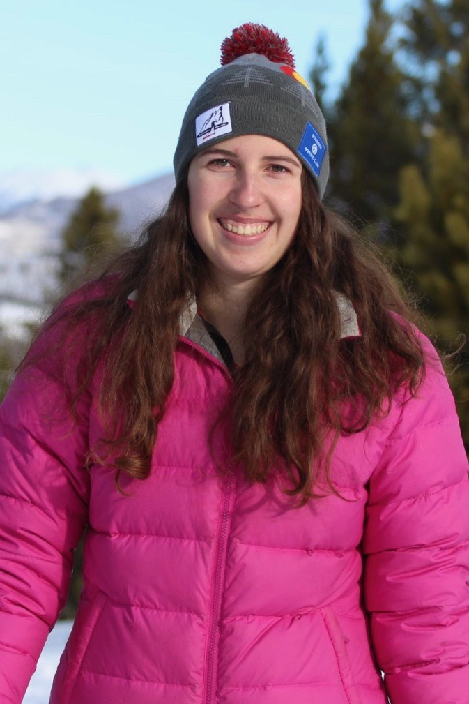

DISCOVER TECH
For 3rd - 6th Grade Girls
This program meets four times per semester on School of Mines campus. It introduces girls to a variety of STEM subjects through fun, hands-on activities. **Due to COVID-19 our spring 2021 program will be virtual. See details below.

- Time: 4:30-5:30
- Day: Offered Monday - Thursday (choose ONE day of the week, as listed below)
- Location: Virtual session via Zoom
- Cost: $40
2021 Spring Session days/dates
- 3rd/4th Grade (choose ONE day of the week):
- MONDAY: January 25, February 8, March 1, March 15
- TUESDAY: January 26, February 9, March 2, March 16
- WEDNESDAY: January 27, February 10, March 3, March 17
- THURSDAY: January 28, February 11, March 4, March 18
- 5th/6th Grade (choose ONE day of the week):
- MONDAY: February 1, February 22, March 8, March 22
- TUESDAY: February 2, February 23, March 9, March 23
- WEDNESDAY: February 3, February 24, March 10, March 24
- THURSDAY: February 4, February 25, March 11, March 25
Our DISCOVER Tech Instructors
 Ellie is a senior in geological engineering from Raymond, Maine. This is her third year working with DECtech and she is super excited to meet this year's group of girls. In her free time she loves being in the mountains and finding new rocks for her collection.
Ellie is a senior in geological engineering from Raymond, Maine. This is her third year working with DECtech and she is super excited to meet this year's group of girls. In her free time she loves being in the mountains and finding new rocks for her collection.
 Gillian is a senior in Electrical Engineering with a minor is Computer Science from Los Gatos, California. She has years of experience teaching and tutoring students in a variety of subjects. The subjects of Electrical Engineering she is interested in are embedded systems and control design. In her spare time, she is either reading or working out with the school’s club triathlon team.
Gillian is a senior in Electrical Engineering with a minor is Computer Science from Los Gatos, California. She has years of experience teaching and tutoring students in a variety of subjects. The subjects of Electrical Engineering she is interested in are embedded systems and control design. In her spare time, she is either reading or working out with the school’s club triathlon team.
 Katelyn is a junior studying Computer Science with a focus in Data Science. This is her 3rd year working for DECtech and her first year as an instructor. She hopes to inspire girls and help them see all of the opportunities available in STEM!
 Laura is a sophomore at Mines studying Computer Science. She started working with DECtech her freshman year and loves to share her enthusiasm for STEM with young girls. In her free time she enjoys hiking, climbing, and being outdoors.
Laura is a sophomore at Mines studying Computer Science. She started working with DECtech her freshman year and loves to share her enthusiasm for STEM with young girls. In her free time she enjoys hiking, climbing, and being outdoors.
 Lucy is a senior studying Computer Science, and will be pursuing a Masters in CS in the spring. She's originally from Minnesota, and loves backpacking, kayaking, and climbing. She loves DECtech because she can share her passion for STEM with smart, inspiring girls and help them create a world and field that's welcoming and inviting to women of all backgrounds.
Lucy is a senior studying Computer Science, and will be pursuing a Masters in CS in the spring. She's originally from Minnesota, and loves backpacking, kayaking, and climbing. She loves DECtech because she can share her passion for STEM with smart, inspiring girls and help them create a world and field that's welcoming and inviting to women of all backgrounds.
 Samyuktha is a Senior at Mines studying Computer Science with a focus is Robotics & Intelligent Systems. She has worked for DECTech since her first semester at Mines and is excited to be an instructor again! She looks forward to working with all the amazing girls that come through the program, ready to inspire them to pursue a STEM education.
Samyuktha is a Senior at Mines studying Computer Science with a focus is Robotics & Intelligent Systems. She has worked for DECTech since her first semester at Mines and is excited to be an instructor again! She looks forward to working with all the amazing girls that come through the program, ready to inspire them to pursue a STEM education.
Have questions? Please visit our FAQ page and find answers to popular questions.
Need more information? Please email us at stem-tech@mines.edu
Thanks to our sponsors, financial scholarships available for those participating in their free/reduced lunch program, and those experiencing economic hardship due to COVID-19. Please email stem-tech@mines.edu for information on how to apply.